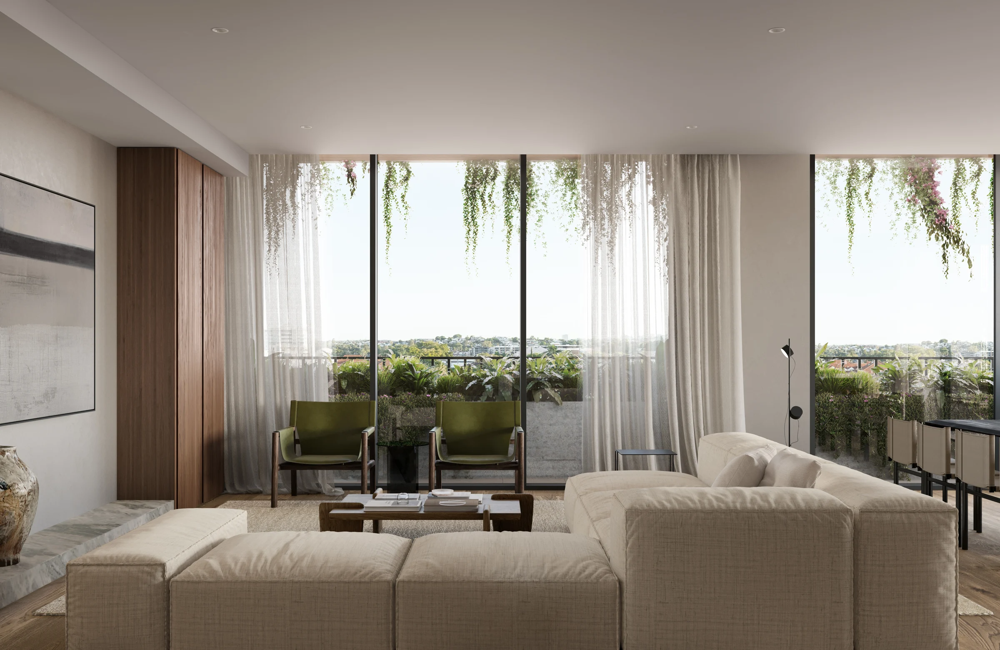
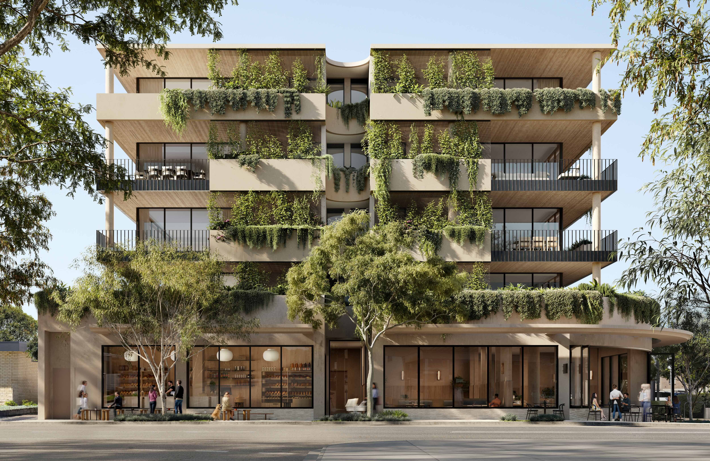
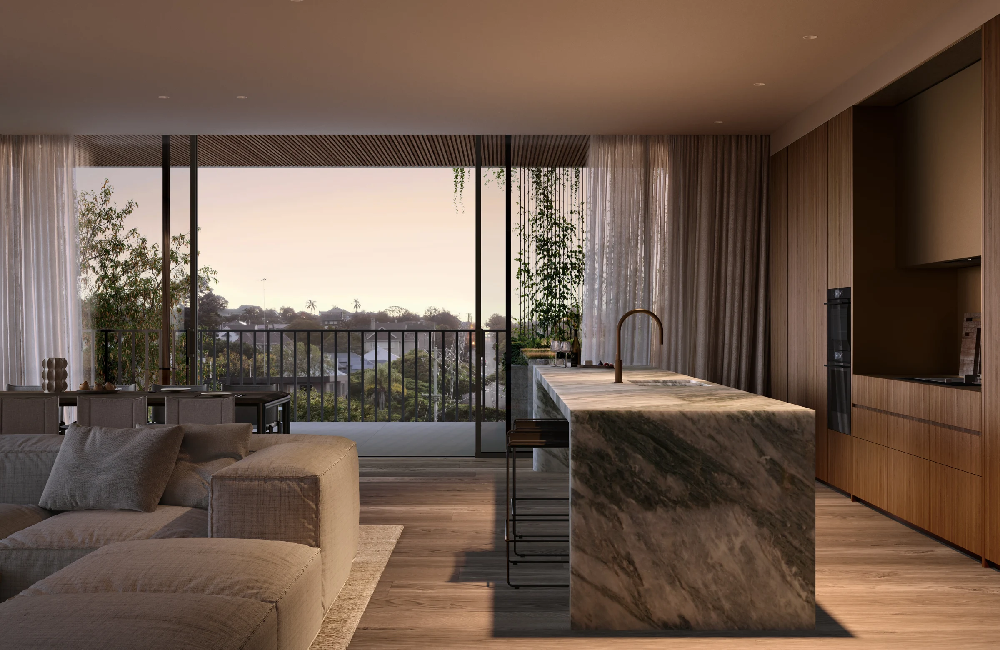
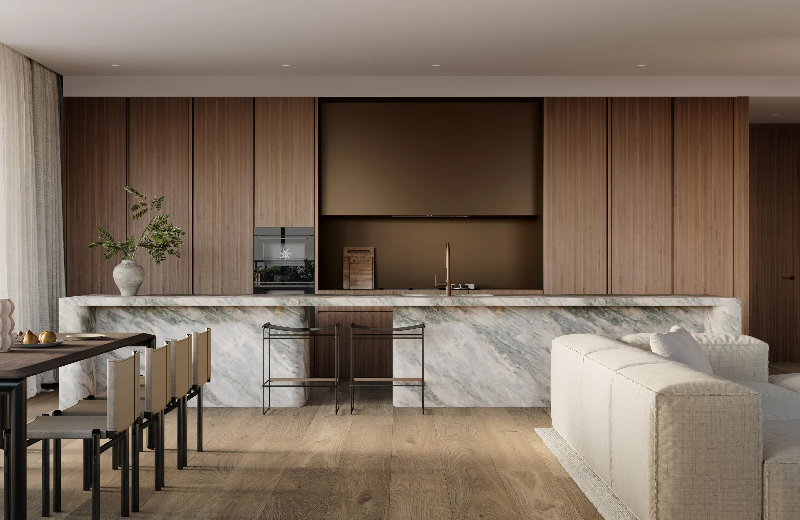
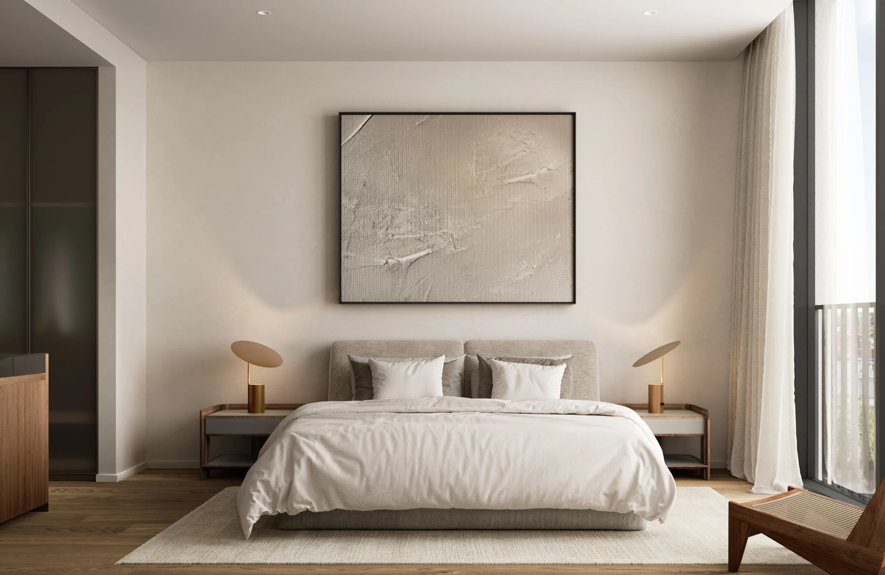
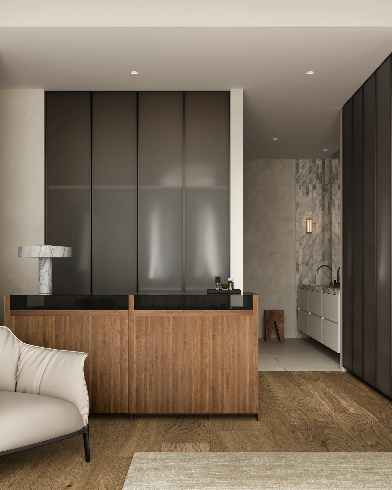
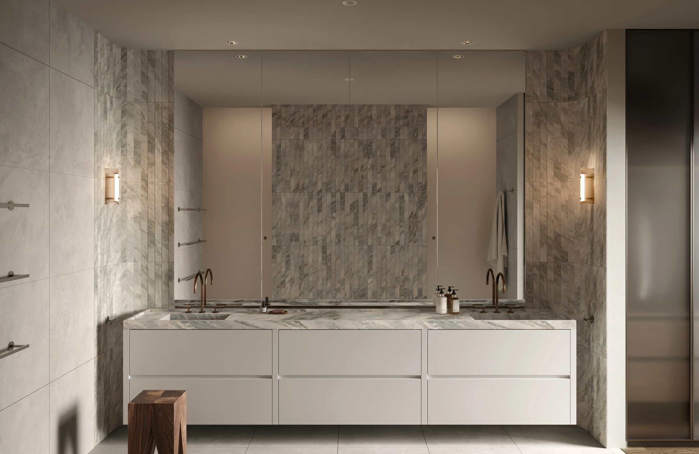
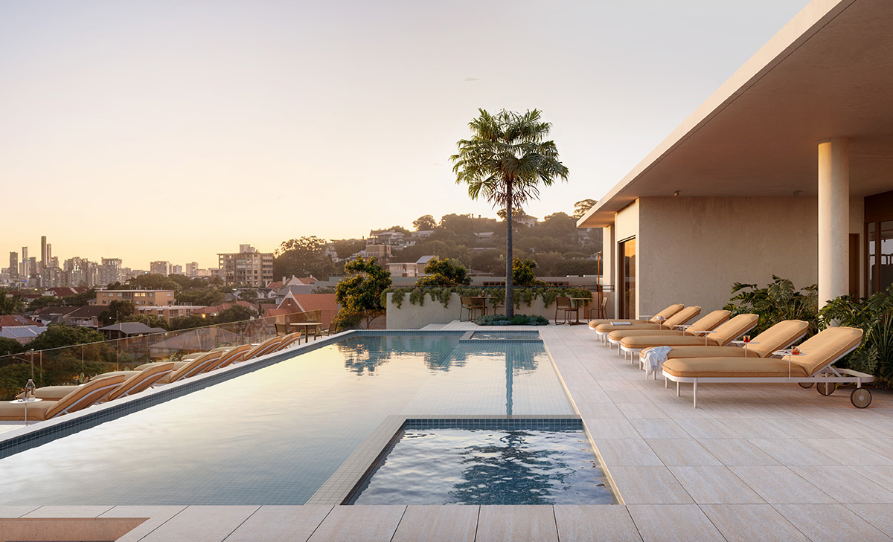
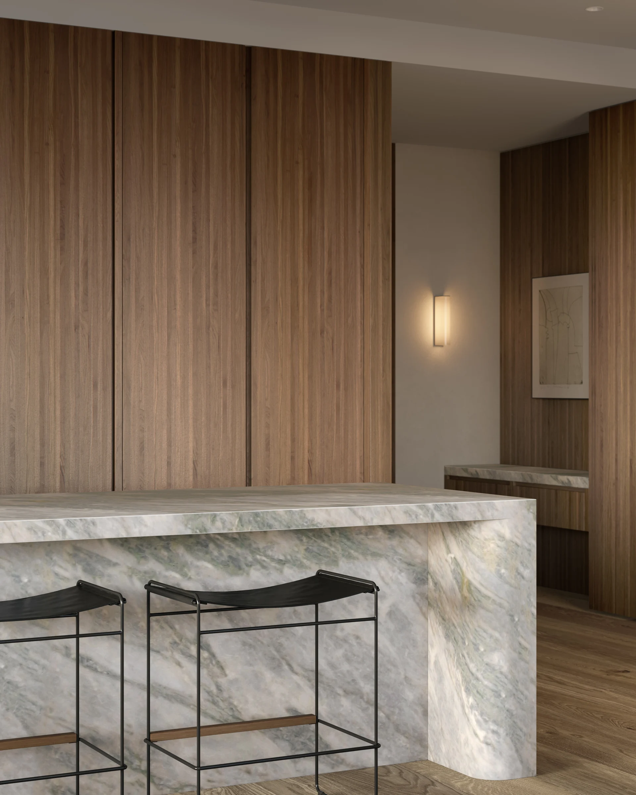

街角的日常
咖啡、餐饮与社区生活，围绕 Racecourse Road 展开。

A CONSIDERED LIFE, IN ASCOT
The Windermere
在 Racecourse Road 的街区日常之上，
留一处属于自己的从容。
The Windermere 由 Silverstone Developments 开发，Carr 担纲建筑与室内设计。仅 30 套住宅的精品规模，将宽敞的居住空间、室内外相连的生活方式与屋顶休闲配套融为一体。
灵感来自 Ascot 经典的 Queenslander 住宅：迎接光线与微风，让相聚、独处与日常起居，都拥有舒展的空间。
精品住宅
建筑及室内设计
成熟街区生活
本次精选居所
咖啡、餐饮与社区生活，围绕 Racecourse Road 展开。
在河畔步道与公园之间，找到散步、放松的片刻。
项目规划沿街商业空间，与 Ascot 既有街区相连接。

03 / ARCHITECTURE
当代建筑语言与 Ascot 的住宅气质相遇。层叠绿植、遮阳格架与开放的户外空间，回应布里斯班的亚热带生活。
开放式客餐厨与户外露台相接。木色、天然石材与柔和色调，让空间里的每一处细节，都回到居住本身。


05 / THE ENTERTAINER'S KITCHEN
宽大的石材岛台，成为烹饪与交谈的中心。收纳与电器融入整洁柜体，在日常使用与待客之间，自如切换。
具体材质及电器型号以 302 最终配置清单为准。

06 / A PRIVATE RETREAT
ROOM TO UNWIND
温润木色、细致收纳与柔和光线，延续到更私密的空间。主卫以石材肌理与双台盆设计，呈现安定、简洁的氛围。


游泳、运动，或只是与朋友坐下来。屋顶将休闲与相聚的空间，带到家的另一层。

泳池 · 遮阳躺床 · 景观休息区
健身房 · 瑜伽平台 · 桑拿
双 BBQ 设施 · 户外用餐 · 聚会空间
配套按官网规划介绍，实际配置及开放情况以项目最新资料为准。
THE WINDERMERE
宽敞三房布局，
与转角露台相连的生活。
开放式客餐厨、独立洗衣空间，以及主卧衣帽收纳区，让会客与私享各有空间。
当前展示为 C1A 参考户型图。302 最终版本及对应关系待确认；面积、车位和价格待补充。
查看原始参考图纸 ↗